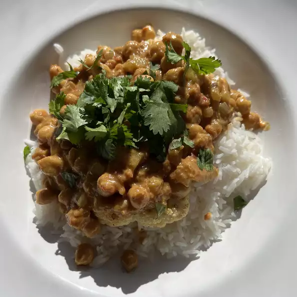

Delicious Chana Masala

A delicious dish of chickpeas, onions, and tomatoes!
This Punjabi Chana Masala, also known as Chole Masala,
is an authentic North Indian style curry made with white chickpeas, freshly powdered spices, onions, tomatoes and herbs.
Naturally vegan and packed with healthy minerals,
protein and fiber,
this delicious vegetarian meal can be ready in just 45 minutes minus the soaking time of chickpeas.
Ingredients
- 1 tablespoon olive oil
- 1 large onion, chopped
- 2 cloves minced garlic
- 2 teaspoons grated fresh ginger
- 1 green chile pepper, chopped
- 1 tablespoon ground cumin
- 1 tablespoon ground cumin
- 1 teaspoon ground coriander
- 1 teaspoon garam masala
- 1 teaspoon ground turmeric
- half teaspoon ground cayenne pepper
- 4 cups chopped tomatoes
- 4 cups cooked chickpeas (garbanzo beans)
- half cup tomato sauce
- half cup plain yogurt
- 1 lemon, juiced
- half teaspoon salt
Steps
- Heat oil in a large saucepan over medium heat. Saute onion, garlic, ginger, and green chile pepper in hot oil until onions are translucent, about 10 minutes.
- Season onion mixture with cumin, paprika, coriander, garam masala, turmeric, and cayenne pepper; stir. Cook onion with spices until fragrant, 1 to 2 minutes. Add tomatoes, chickpeas, and tomato sauce; stir and simmer until the tomatoes soften, about 5 minutes.
- Stir yogurt into the mixture until the color of the mixture is even; simmer until again hot, about 5 minutes more. Remove pan from heat; stir lemon juice and salt into the mixture.